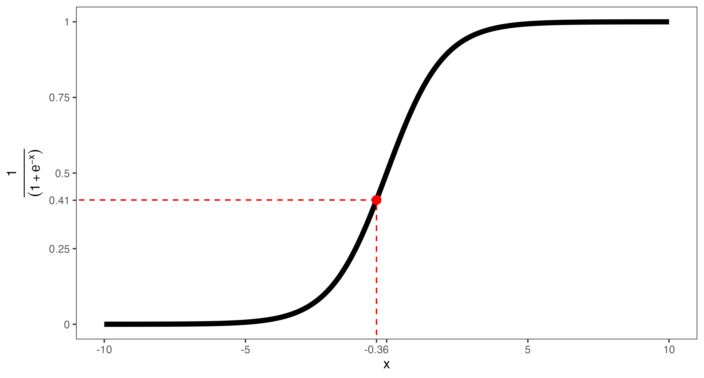
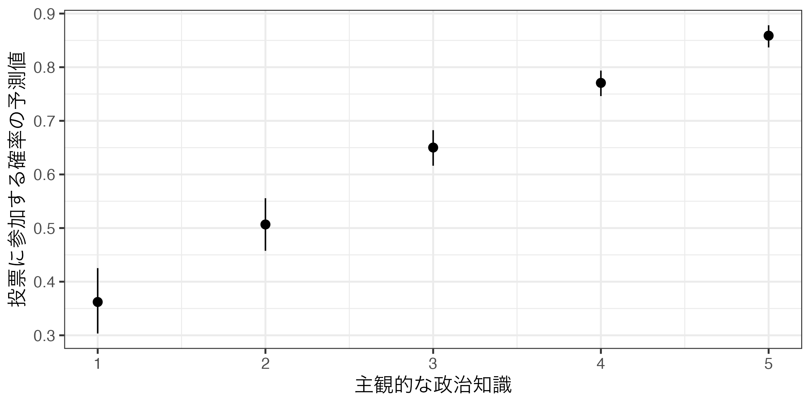
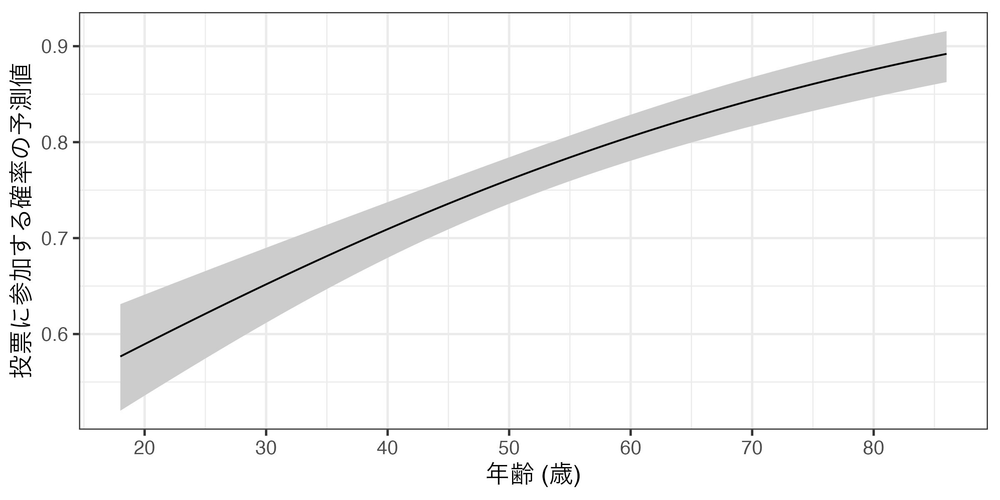

第11回講義資料
ロジスティック回帰分析
スライド
セットアップ
本日の実習用データ（LMSからダウンロード可能）と必要なパッケージ（{tidyverse}、{summarytools}、{marginaleffects}）を読み込む。データを読み込み、dfという名のオブジェクトとして格納する。
各変数の詳細はスライドを参照すること。データ分析を進める前に、まず{summarytools}のdescr()関数を使ってdfの各変数の記述統計量を確認する。今回のデータの場合、全て連続変数（ダミー変数も連続変数として扱う）であるため、dfをそのままdescr()に渡せば良い。
Code 02
Descriptive Statistics
df
N: 2555
Mean Std.Dev Min Max N.Valid
--------------- ------- --------- ------- ------- ---------
Voted 0.71 0.45 0.00 1.00 2555.00
Female 0.46 0.50 0.00 1.00 2555.00
Age 50.91 15.69 18.00 86.00 2555.00
Educ 3.21 0.90 1.00 4.00 2555.00
Knowledge 3.95 1.12 1.00 5.00 2555.00
Ideology 5.40 2.16 0.00 10.00 2555.00今回は以下の問いに答えるモデルの推定を行う。
有権者の投票参加を規定する要因を調べたい。投票所に足を運ぶには予め投票先を決めておく必要があろう。しかし、数多い選択肢（候補者、政党）の中から自分の望みを実現してくれそうな選択肢を見つけることは簡単な作業ではない。政治に関する知識があれば、比較的簡単に見つかるため、投票参加しやすいと考えられる。一方、そうでない有権者は自分にとっても最適な選択肢を見つけることを諦め、棄権するだろう。これは本当だろうか。
まず、応答変数は回答者の投票参加の有無（Voted）である。こちらは投票すれば1、危険すれば0の値を取るダミー変数であり、応答変数として使う場合は二値変数、またはバイナリー変数とも呼ばれる。続いて、主な説明変数は回答者の主観的な政治知識（Knowledge）である。また、主な説明変数以外の説明変数（=統制変数）として性別（Female）、年齢（Age）、学歴（Educ）、イデオロギー（Ideology）を投入する。このモデルを可視化すると以下のようになる。
線形確率モデル
まずは、これまで紹介してきた線形回帰分析を使って、モデルを推定してみよう。推定する回帰式は以下の通りである。
\[ \widehat{\mbox{Voted}} = \alpha + \beta_1 \mbox{Knowledge} + \beta_2 \mbox{Female} + \beta_3 \mbox{Age} + \beta_4 \mbox{Educ} + \beta_5 \mbox{Ideology} \]
Call:
lm(formula = Voted ~ Knowledge + Female + Age + Educ + Ideology,
data = df)
Residuals:
Min 1Q Median 3Q Max
-1.0057 -0.4242 0.1452 0.2844 0.8522
Coefficients:
Estimate Std. Error t value Pr(>|t|)
(Intercept) -0.1093644 0.0558137 -1.959 0.050168 .
Knowledge 0.1186971 0.0077281 15.359 < 2e-16 ***
Female -0.0549171 0.0170946 -3.213 0.001332 **
Age 0.0046902 0.0005579 8.408 < 2e-16 ***
Educ 0.0357970 0.0096391 3.714 0.000209 ***
Ideology 0.0040744 0.0038653 1.054 0.291944
---
Signif. codes: 0 '***' 0.001 '**' 0.01 '*' 0.05 '.' 0.1 ' ' 1
Residual standard error: 0.4202 on 2549 degrees of freedom
Multiple R-squared: 0.1451, Adjusted R-squared: 0.1435
F-statistic: 86.55 on 5 and 2549 DF, p-value: < 2.2e-16 推定の結果、政治知識（Knowledge）の係数は0.119が得られた。これは「政治知識が1単位上がると、投票参加の確率は約11.9%ポイント上がる」ことを意味する（「%」でなく、「%ポイント」であることに注意）。\(p\)値も非常に小さく（\(p < 0.05\)）、統計的に有意な関係であると言えよう。
このようにバイナリー変数を応答変数として使う線形回帰モデルを線形確率モデル（linear probability model; LPM）と呼ぶ。これは非常に直感的な方法であるものの、一つ大きな問題がある。たとえば、主観的政治知識（Knowledge = 5）が5、男性（Female = 0）、86歳（Age = 86）、教育水準が4（Educ = 4）、イデオロギーが10（Ideology = 10）の回答者がいる場合、投票に参加する確率の予測値を計算してみよう。
Code 04
[1] 1.07141主観的政治知識が5、男、86歳、教育水準が4、イデオロギーが10の回答者が投票に参加する確率は約107.1%である。確率は0〜100%の値を取るはずなのに、100%を超えてしまう。 他にも線形確率モデルは、線形回帰モデルの重要な仮定である分散の不均一性の満たさないなど、いくつかの問題がある。ここで登場するのがロジスティック回帰分析だ。
ロジスティック回帰分析
ロジスティック関数
ロジスティック回帰分析を理解するためには、その背後にはるロジスティック関数に関する知識が必要である。ロジスティック関数は以下のような関数である。
\[ \text{logistic}(x) = \frac{1}{1 + e^{-x}} \]
式内の\(e\)はネイピア数であり、2.71828184590…の無理数である。\(x\)は\(-\infty \sim \infty\)の値を取り得る。たとえば、\(x\)が\(-\infty\)の場合、\(e^{-x}\)は\(e^{-(-\infty)} = \infty\)、\(x\)が\(\infty\)の場合、\(e^{-x}\)は\(e^{-\infty} = 0\)となる。つまり、\(e^{-x}\)は\(0 \sim \infty\)の値を取る。この\(e^{-x}\)が0の場合、\(\text{logistic}(x)\)は1、\(e^{-x}\)が\(\infty\)の場合、\(\text{logistic}(x)\)は0を取る。つまり、\(\text{logistic}(x)\)は0以上、1以下の取ることが分かる。確率もまた0以上1以下であるため、この関数が何らかの役割を果たすこととなる。以下の図は\(x\)の値ごとのロジスティック関数の折れ線グラフである。
\(x\)の値が大きければ大きいほど、logistic(\(x\))の値は1へ近づくことが分かる。この\(x\)を\(y^*\)と表記した場合、ロジスティック回帰分析は
\[ \begin{align} \mbox{Pr}(\mbox{Voted} = 1) & = \frac{1}{1 + e^{-y^*}} \\ y^* & = \alpha + \beta_1 \mbox{Knowledge} + \beta_2 \mbox{Female} + \beta_3 \mbox{Age} + \beta_4 \mbox{Educ} + \beta_5 \mbox{Ideology} \end{align} \]
における\(\alpha\)、\(\beta_1\)、…を推定することである。ここでの\(y^*\)は線形予測子（linear predictor）と呼ばれる。
実装
ロジスティックの実装はglm()関数を使用し、使い方はlm()関数とほぼ同様である。
lm()との違いはfamily引数が必要という点だ。ロジスティック回帰分析の場合はfamily = binomial("logit")、本講義では取り上げないものの同目的の分析手法であるプロビット回帰分析の場合はfamily = binomial("probit")を使用する。それでは以下のモデルを推定し、fit1に格納してみよう。
\[ \mbox{Pr}(\mbox{Voted} = 1) = \frac{1}{1 + e^{-(\alpha + \beta_1 \mbox{Knowledge} + \beta_2 \mbox{Female} + \beta_3 \mbox{Age} + \beta_4 \mbox{Educ} + \beta_5 \mbox{Ideology})}} \]
Code 05
Call:
glm(formula = Voted ~ Knowledge + Female + Age + Educ + Ideology,
family = binomial("logit"), data = df)
Coefficients:
Estimate Std. Error z value Pr(>|z|)
(Intercept) -3.30579 0.32049 -10.315 < 2e-16 ***
Knowledge 0.59290 0.04294 13.808 < 2e-16 ***
Female -0.31597 0.09628 -3.282 0.001031 **
Age 0.02651 0.00320 8.284 < 2e-16 ***
Educ 0.20827 0.05430 3.835 0.000125 ***
Ideology 0.02392 0.02254 1.061 0.288586
---
Signif. codes: 0 '***' 0.001 '**' 0.01 '*' 0.05 '.' 0.1 ' ' 1
(Dispersion parameter for binomial family taken to be 1)
Null deviance: 3078.9 on 2554 degrees of freedom
Residual deviance: 2700.6 on 2549 degrees of freedom
AIC: 2712.6
Number of Fisher Scoring iterations: 4それでは結果を解釈してみよう。線形確率モデルと同様、政治知識の\(p\)値は0.001未満であり、「主観的な政治知識と投票参加の間には統計的に有意な関係がある」ことが分かる。また、係数の符号（今回は+）を考えると、「主観的な政治知識が高くなると、投票に参加する確率も上がる」とも言えよう。しかし、政治知識が1単位上がると、投票参加の確率は具体的にどれくらい上がるか。線形確率モデルの場合は係数をそのまま解釈するだけで、具体的な上がりの度合いが分かったが、ロジスティック回帰分析では違う。
たとえば、政治知識の係数は約0.593であるが、「主観的な政治知識が1上がると、投票参加の確率が0.593%p上がる」ということは完全な間違いである。これをどう解釈すべきだろうか。
たおてば、主観的政治知識が3（Knowledge = 3）、女性（Female = 1）、20歳（Age = 20）、学歴が大卒（Educ = 4）、イデオロギーが中道（Ideology = 5）の場合の投票参加の予測確率を計算してみよう。まず、coef()関数で係数のみを抽出してみよう。
(Intercept) Knowledge Female Age Educ Ideology
-3.30579506 0.59290164 -0.31596873 0.02650943 0.20827008 0.02391612 続いて、切片には1を、その他の係数には各変数の具体的な値をかけて合計を求める。これが線形予測子だ。
Code 08
(Intercept)
-0.3602094 同じ長さのベクトルが2つあれば、同じ位置同士の要素が計算されることを考えると、以下のように線形予測子を計算することもできる。
あとは線形予測子の値をロジスティック関数に代入するだけだ。
結果は0.411であり、これは投票参加の予測確率は約41.1%であるこを意味する（以下の図を参照）。

このような作業をより簡単にしてくれるのが、前回の講義で登場した{marginaleffects}パッケージである。このパッケージが提供するpredictions()関数の利用すれば予測確率が簡単に計算できる。使い方は以下の通りである。
たとえば、先程の例をpredictions()関数で計算してみよう。
Code 11
Knowledge Female Age Educ Ideology Estimate Pr(>|z|) S 2.5 % 97.5 %
3 1 20 4 5 0.411 0.00285 8.5 0.355 0.469
Type: invlink(link)
Columns: rowid, estimate, p.value, s.value, conf.low, conf.high, Knowledge, Female, Age, Educ, Ideology, Voted datagrid()内で変数を特定の値で指定しない場合、その変数は自動的に平均値が代入される。たとえば、Knowledgeが1〜5の場合の投票参加確率の予測値を計算してみよう。その他の変数はすべて平均値に固定する。計算結果はfit1_predに格納する。
Knowledge Estimate Pr(>|z|) S 2.5 % 97.5 % Female Age Educ Ideology
1 0.362 <0.001 15.1 0.303 0.425 0 50.9 3.21 5.4
2 0.507 0.789 0.3 0.458 0.556 0 50.9 3.21 5.4
3 0.650 <0.001 53.3 0.616 0.683 0 50.9 3.21 5.4
4 0.771 <0.001 229.6 0.746 0.794 0 50.9 3.21 5.4
5 0.859 <0.001 315.9 0.837 0.878 0 50.9 3.21 5.4
Type: invlink(link)
Columns: rowid, estimate, p.value, s.value, conf.low, conf.high, Female, Age, Educ, Ideology, Knowledge, Voted Knowledgeの値に応じた投票参加の予測確率（0以上、1以下）がEstimate列に出力され、95%信頼区間の下限と上限は2.5%、97.5%列に表示される。ただし、こちらで表示された列名は本当の列名ではない。つまり、このfit1_predを用いて作図をする際、Estimateや2.5%という名前でマッピングすることはできない。今出力された列名はあくまでも読みやすさを重視したものであり、実際の列名は異なる。他にも実際にはあるものの出力されていない列も存在する。すべての列を、本当の列名と共に出力するなら、print()関数を使用し、style = "data.frame"を追加しよう。
rowid estimate p.value s.value conf.low conf.high Female Age Educ Ideology
1 1 0.3621400 2.853027e-05 15.0971469 0.3033890 0.4253217 0 50.91155 3.207436 5.400391
2 2 0.5067030 7.894333e-01 0.3411107 0.4576064 0.5556706 0 50.91155 3.207436 5.400391
3 3 0.6501538 9.074881e-17 53.2908989 0.6162502 0.6826047 0 50.91155 3.207436 5.400391
4 4 0.7707616 7.609581e-70 229.6071497 0.7461315 0.7936630 0 50.91155 3.207436 5.400391
5 5 0.8588194 8.193723e-96 315.8705780 0.8368719 0.8782436 0 50.91155 3.207436 5.400391
Knowledge Voted
1 1 0
2 2 0
3 3 0
4 4 0
5 5 0 Estimateの本当の列名はestimate、2.5%と97.5%の本当の列名はconf.low、conf.highであることが分かる。今回はここまで知らなくても良いかも知れないが、第13回（推定結果の可視化）では、この点を理解しないと絶対に作図できないため注意しておこう。
話を戻そう。これまでの結果を見れば、KnowledgeがVotedに与える影響は一定ではないことがわかる。たとえば、Knowledgeの値が1の場合、投票に参加する確率は32.94%である。ここでKnowledgeの値が2の場合、投票に参加する確率は47.05%であり、14.11%p増加したことが分かる（14.11「%」でなく、14.11「%p」であることに注意しよう。%pは「パーセントポイント」と読む）。それではKnowledgeの値が3の場合はどうだろうか。この場合の投票参加の確率は61.65%であり、先より14.60%p増加した。また、Knowledgeの値が4の場合の予測確率は74.42%（12.77%p増加）、5の場合のそれはは84.03%で、9.61%p増加したことが分かる。このようにロジスティック関数（から得られた曲線）の形が非線形であることを考えると、ある意味、当たり前のことであろう。
したがって、ロジスティック回帰分析を行う場合、「Xが1単位上がるとYはZZ上がる/下がる」という表現はあまり使わず、文章では「正（負）の関係がある」、「統計的に有意な関係は見られない」程度とし、予測確率をグラフとして示すのが一般的である。たとえば、以上の結果を可視化したものが以下の図である。可視化については次回の講義で解説する。

Ageのように説明変数の中でも取り得る値が多い場合は以下のような図になってしまい、人によっては少し気持ち悪い図になってしまう。
コード
Code 14
predictions(fit1, newdata = datagrid(Age = 18:86)) |>
ggplot() +
geom_pointrange(aes(x = Age, y = estimate,
ymin = conf.low, ymax = conf.high)) +
labs(x = "年齢 (歳)", y = "投票に参加する確率の予測値") +
scale_x_continuous(breaks = c(20, 30, 40, 50, 60, 70, 80),
labels = c(20, 30, 40, 50, 60, 70, 80)) +
theme_bw(base_size = 14) したがって、取り得る値が多い連続変数を横軸にする場合は、折れ線グラフ（geom_line()）とリボン（geom_ribbon()）を併用することが一般的だ。
コード
Code 14
fit1_pred2 <- predictions(fit1, newdata = datagrid(Age = 18:86))
fit1_pred2 |>
ggplot() +
geom_ribbon(aes(x = Age, ymin = conf.low, ymax = conf.high),
fill = "gray80") +
geom_line(aes(x = Age, y = estimate)) +
labs(x = "年齢 (歳)", y = "投票に参加する確率の予測値") +
scale_x_continuous(breaks = c(20, 30, 40, 50, 60, 70, 80), labels = c(20, 30, 40, 50, 60, 70, 80)) +
theme_bw(base_size = 14)
LPMとの比較
線形回帰分析（線形確率モデル; LPM）は予測値として0未満か1より大きい値、つまり理論上あり得ない予測値が得られる可能性がある。一方、ロジスティック回帰の場合、予測確率が計算されるので必ず0以上1以下の値が得られる。しかし、実践の場面において線形回帰分析とロジスティック回帰分析は似たような予測値/予測確率を出す場合も多い。たとえば、本日の例における線形回帰モデル（lm_fit）とロジスティック回帰モデル（fit1）を比較してみよう。
| 線形回帰 | ロジスティック回帰 | |
|---|---|---|
| (Intercept) | -0.109 | -3.306 |
| (0.050) | (<0.001) | |
| Knowledge | 0.119 | 0.593 |
| (<0.001) | (<0.001) | |
| Female | -0.055 | -0.316 |
| (0.001) | (0.001) | |
| Age | 0.005 | 0.027 |
| (<0.001) | (<0.001) | |
| Educ | 0.036 | 0.208 |
| (<0.001) | (<0.001) | |
| Ideology | 0.004 | 0.024 |
| (0.292) | (0.289) | |
| Num.Obs. | 2555 | 2555 |
| R2 | 0.145 | |
| R2 Adj. | 0.143 | |
| AIC | 2828.4 | 2712.6 |
| BIC | 2869.3 | 2747.7 |
| Log.Lik. | -1407.214 | -1350.319 |
| F | 86.552 | 63.524 |
| RMSE | 0.42 | 0.42 |
そもそも異なるモデルを使用しているため、係数が大きく異なるのは仕方ない。重要なのは予測値/予測確率だろう。今回は主観的な政治知識（Knowledge）を1から5まで1単位で動かし、その他の共変量は平均値に固定した上で、投票参加の予測確率を計算してみよう。それぞれ計算結果はlm_predとlgoit_predという名のオブジェクトとして作業環境内に格納する。
Knowledge Estimate Std. Error z Pr(>|z|) S 2.5 % 97.5 % Female Age Educ Ideology
1 0.385 0.0258 14.9 <0.001 164.5 0.334 0.436 0 50.9 3.21 5.4
2 0.504 0.0192 26.2 <0.001 501.6 0.466 0.541 0 50.9 3.21 5.4
3 0.622 0.0138 45.2 <0.001 Inf 0.595 0.649 0 50.9 3.21 5.4
4 0.741 0.0114 64.9 <0.001 Inf 0.719 0.763 0 50.9 3.21 5.4
5 0.860 0.0138 62.3 <0.001 Inf 0.833 0.887 0 50.9 3.21 5.4
Type: response
Columns: rowid, estimate, std.error, statistic, p.value, s.value, conf.low, conf.high, Female, Age, Educ, Ideology, Knowledge, Voted
Knowledge Estimate Pr(>|z|) S 2.5 % 97.5 % Female Age Educ Ideology
1 0.362 <0.001 15.1 0.303 0.425 0 50.9 3.21 5.4
2 0.507 0.789 0.3 0.458 0.556 0 50.9 3.21 5.4
3 0.650 <0.001 53.3 0.616 0.683 0 50.9 3.21 5.4
4 0.771 <0.001 229.6 0.746 0.794 0 50.9 3.21 5.4
5 0.859 <0.001 315.9 0.837 0.878 0 50.9 3.21 5.4
Type: invlink(link)
Columns: rowid, estimate, p.value, s.value, conf.low, conf.high, Female, Age, Educ, Ideology, Knowledge, Voted この2つの表をbind_rows()関数を使って一つにまとめる。bind_rows()を使い方は前期の第11回講義を参照すること。結合後の表はcompare_predと名付ける。
Code 18
Model rowid estimate std.error statistic p.value s.value conf.low
1 線形回帰 1 0.3849388 0.02582091 14.90803 2.922605e-50 164.5491499 0.3343308
2 線形回帰 2 0.5036359 0.01919585 26.23671 1.013609e-151 501.5916407 0.4660128
3 線形回帰 3 0.6223330 0.01377280 45.18565 0.000000e+00 Inf 0.5953388
4 線形回帰 4 0.7410302 0.01141699 64.90592 0.000000e+00 Inf 0.7186533
5 線形回帰 5 0.8597273 0.01380048 62.29692 0.000000e+00 Inf 0.8326788
6 ロジスティック回帰 1 0.3621400 NA NA 2.853027e-05 15.0971469 0.3033890
7 ロジスティック回帰 2 0.5067030 NA NA 7.894333e-01 0.3411107 0.4576064
8 ロジスティック回帰 3 0.6501538 NA NA 9.074881e-17 53.2908989 0.6162502
9 ロジスティック回帰 4 0.7707616 NA NA 7.609581e-70 229.6071497 0.7461315
10 ロジスティック回帰 5 0.8588194 NA NA 8.193723e-96 315.8705780 0.8368719
conf.high Female Age Educ Ideology Knowledge Voted
1 0.4355469 0 50.91155 3.207436 5.400391 1 0
2 0.5412591 0 50.91155 3.207436 5.400391 2 0
3 0.6493272 0 50.91155 3.207436 5.400391 3 0
4 0.7634071 0 50.91155 3.207436 5.400391 4 0
5 0.8867757 0 50.91155 3.207436 5.400391 5 0
6 0.4253217 0 50.91155 3.207436 5.400391 1 0
7 0.5556706 0 50.91155 3.207436 5.400391 2 0
8 0.6826047 0 50.91155 3.207436 5.400391 3 0
9 0.7936630 0 50.91155 3.207436 5.400391 4 0
10 0.8782436 0 50.91155 3.207436 5.400391 5 0 これまでと同様、予測値のpoint-rangeプロットを作成し、Model列を基準にファセットを分割する。ファセット分割については前期の第13回、第14回資料を参照すること。
Code 19
また、以下のように一つのファセットにまとめることもできる。point-rangeの色（color）にModel変数でマッピングすれば良い。この場合、aes()の外側にposition = position_dodge2(0.5)を追加してpoint-rangeをずらしておく必要がある。
Code 20
今回の場合、線形回帰モデルとロジスティック回帰モデル間に大きな差は見られない（むろん、差がないわけではない）。最終的にはロジスティック回帰分析を行うとしても、その前段階として解釈しやすい線形回帰分析をしてみることも一つの選択肢だろう（そもそも応答変数が0/1の二値変数でもロジスティック回帰が推奨されない場合もある）。